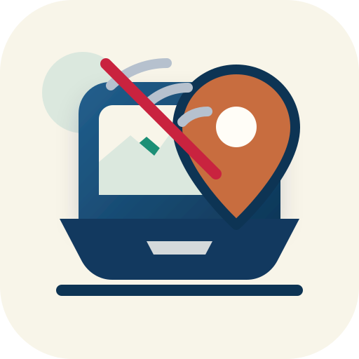

Soberania de datos
Audio, transcripcion y memos viven en carpetas locales. local-data-sovereignty.svg
Sistema visual para explicar por que AudioScript Contextual es local, metodologico, accesible y capaz de trabajar sin internet.
Audio, transcripcion y memos viven en carpetas locales. local-data-sovereignty.svg
Transcripcion, memos, codigos y criterio humano en el mismo flujo. methodological-control.svg
Sin costos de instalación, mantenimiento ni suscripción. accessible-cost.svg

Funciona en campo, archivo, avion o cualquier lugar sin red confiable. offline-fieldwork.svg